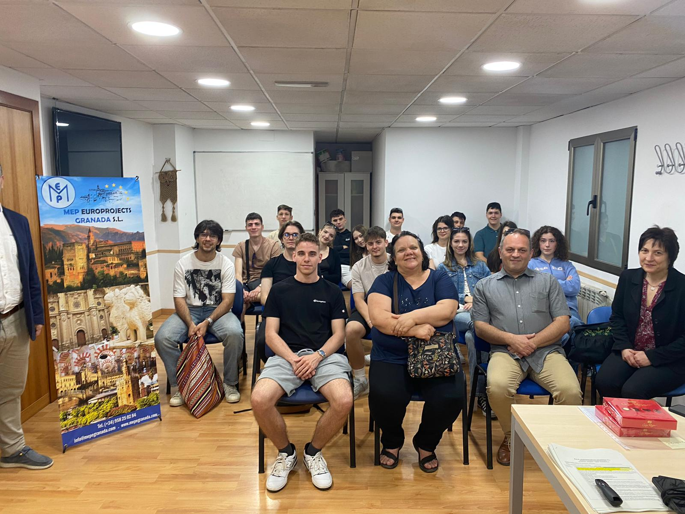
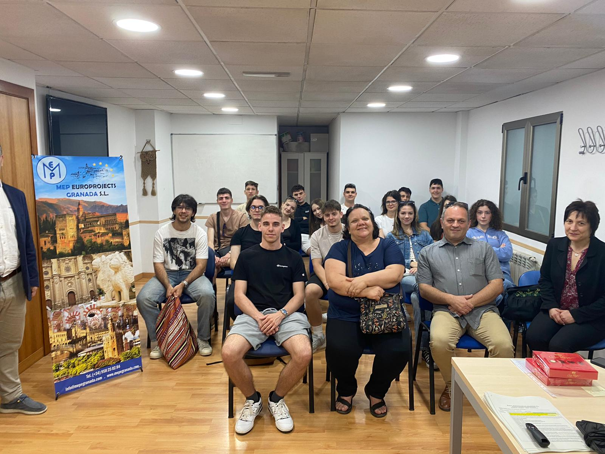


 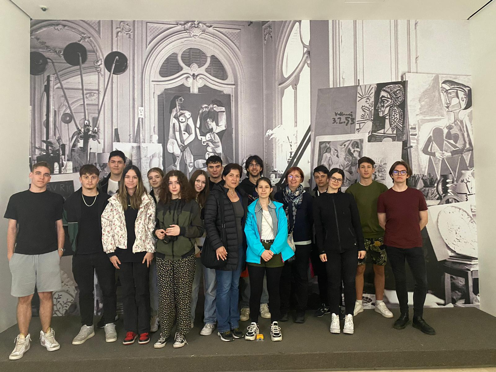
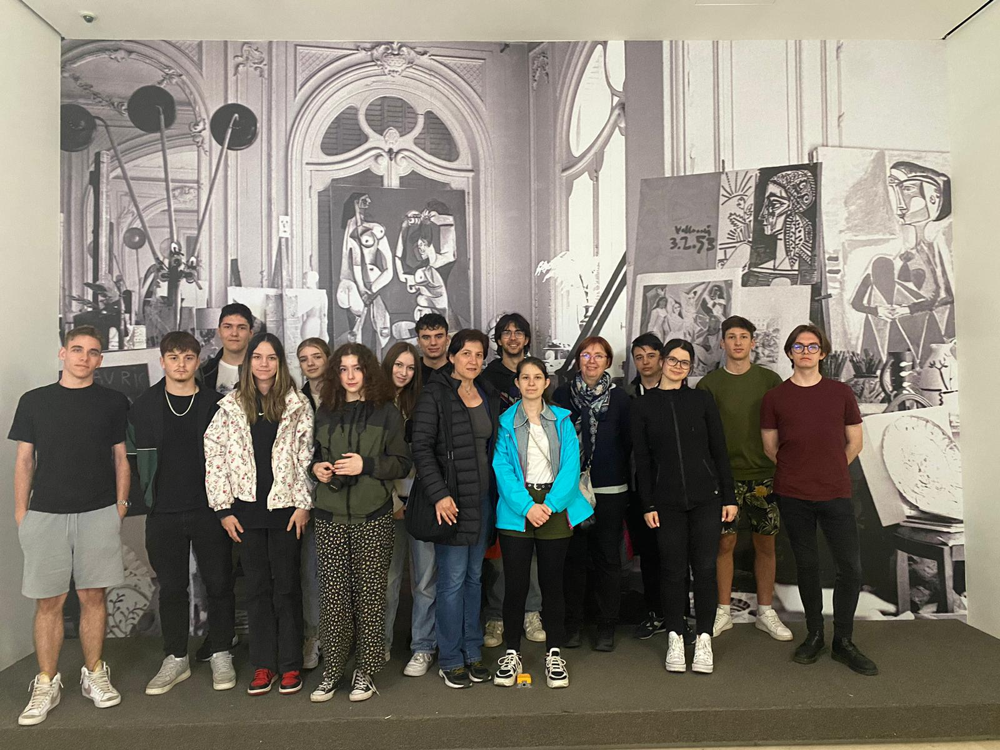


 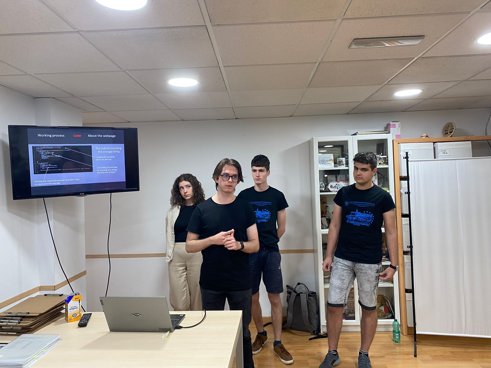
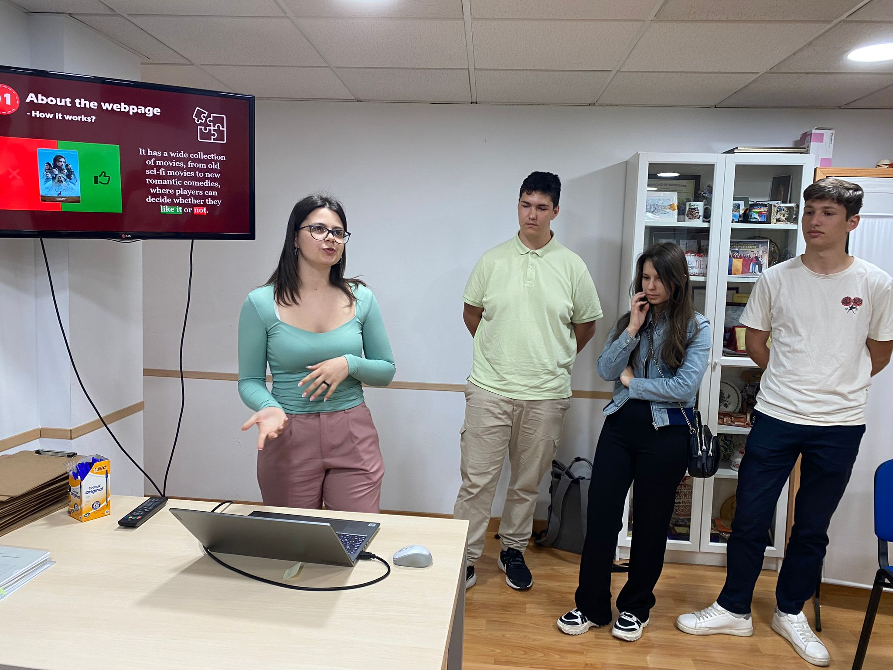
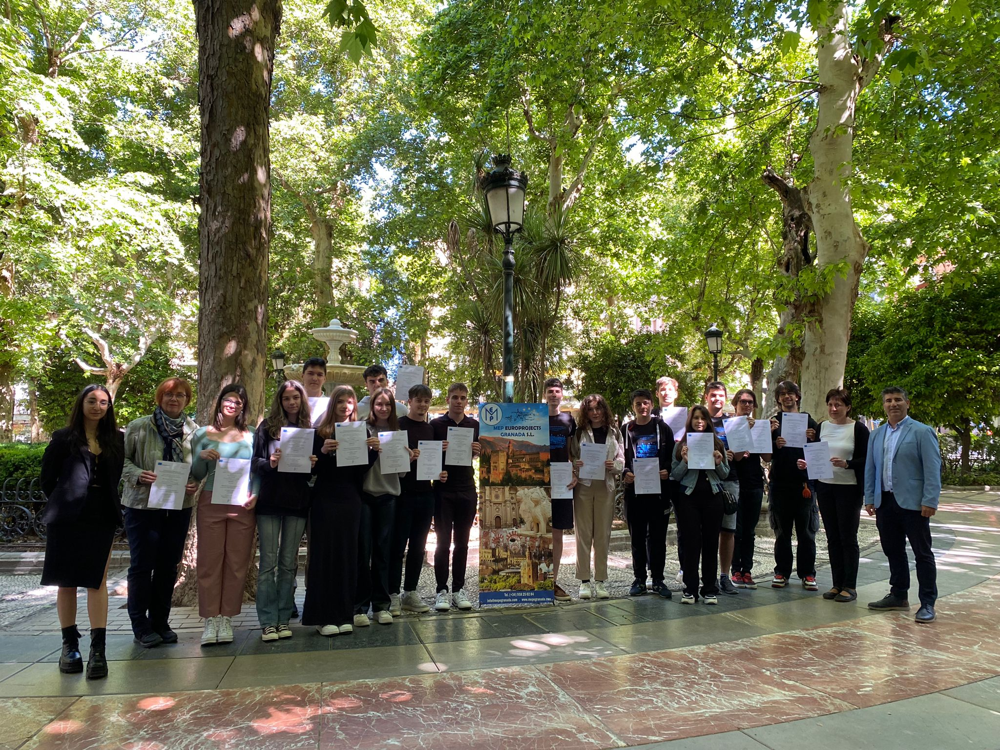
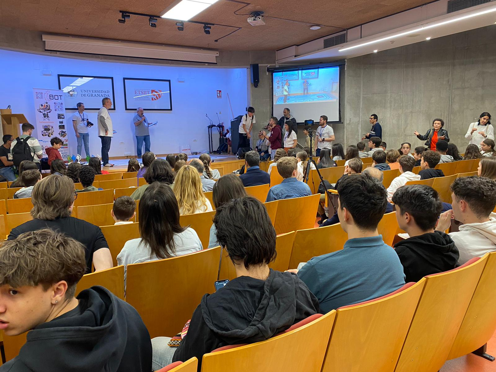
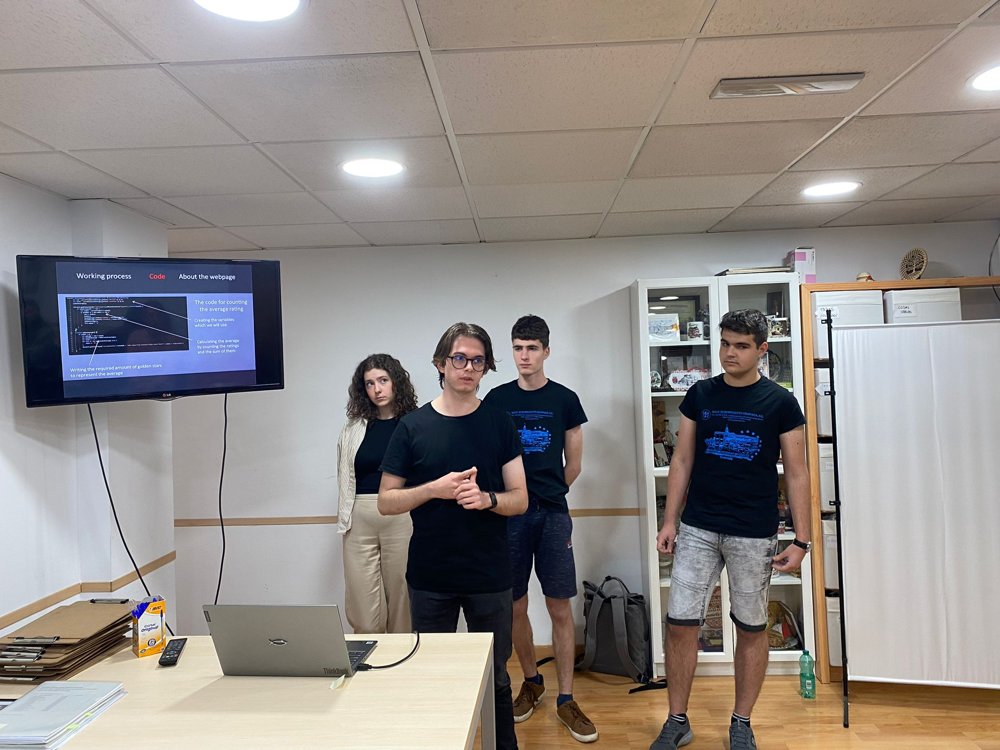
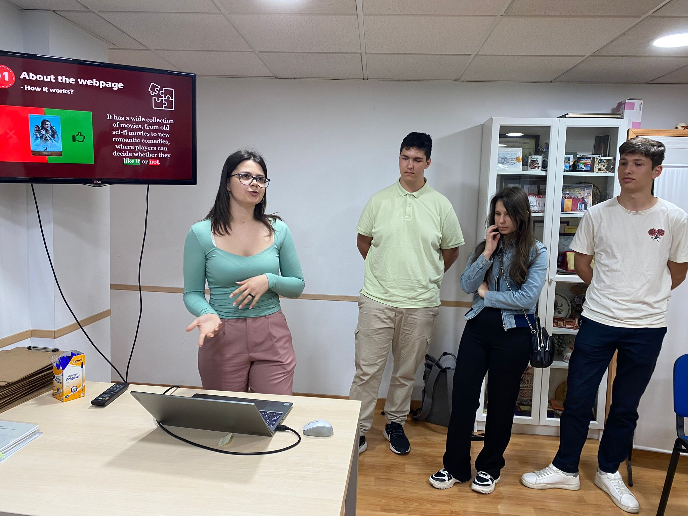
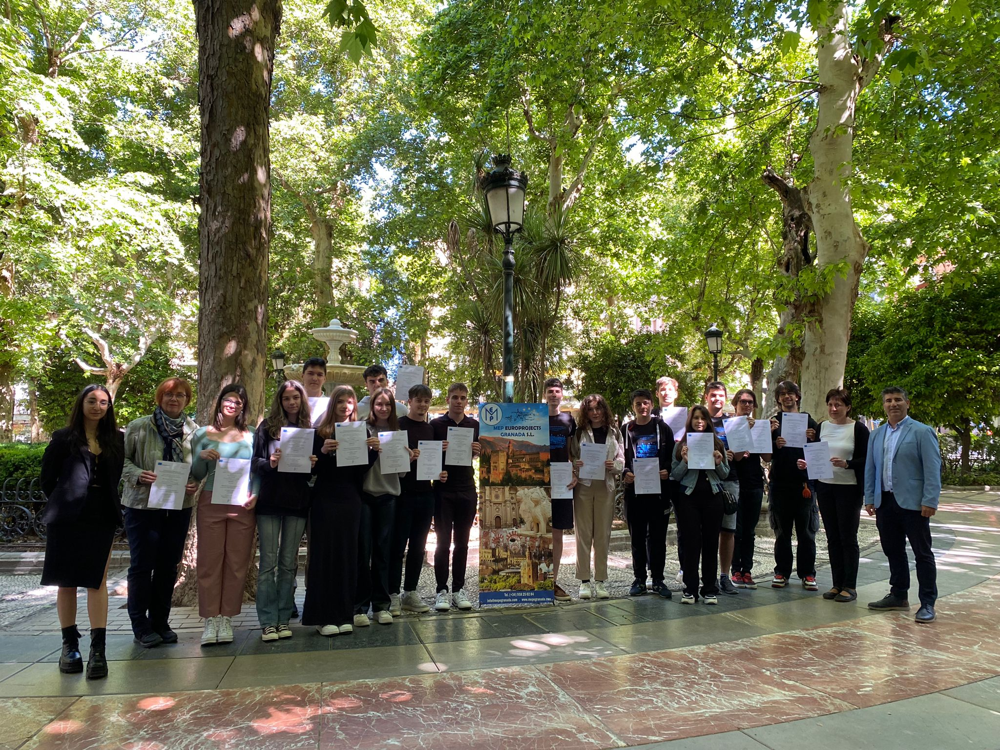
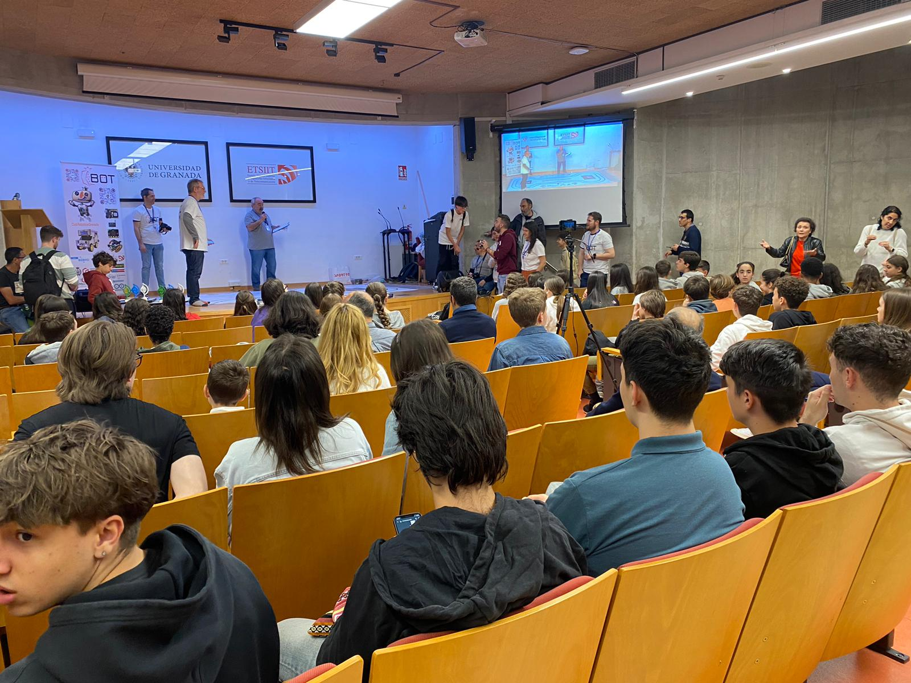

Proiect Erasmus+ - De la școală la profesia web, elevii în Spania
Ce se întâmplă dacă scoatem șaisprezece elevi din habitatul lor natural și îi mutăm într-un mediu complet nou? Elevul bolyai, fiind o formă de viață specială, așa cum s-a dovedit, se adaptează ușor chiar și unui loc cu o cantitate semnificativă de diferențe culturale, deși nu chiar din prima zi.
Distanța dintre Liceul Teoretic Bolyai Farkas din Târgu Mureș și orașul Granada din Spania nu pare întâmplător atât de mare, deoarece elevii care au călătorit acolo s-au întors nu doar cu amintiri de neuitat, ci și cu bagaje pline de experiențe pe viață. Un pas mic pentru om, dar un pas mare pentru un bolyaiști! Ceea ce este sigur este că schimbarea pe care au trăit-o în cele trei săptămâni de mobilitate nu poate fi explicată în doar două sau trei propoziții.
Ajunși în oraș, după o odihnă bine meritată, prima parte a misiunii lor a fost să se familiarizeze cu centrul care a organizat proiectul și cu compania unde își vor petrece următoarele zile de lucru. Din fericire, atât instructorul lor, cât și angajații centrului erau oameni prietenoși și dornici să îi ajute. Pentru tinerii flexibili, cele aproximativ 7 ore zilnice de muncă intensivă în fața calculatorului nu au reprezentat o mare problemă, și în câteva zile s-au simțit deja confortabil în mediul lor de lucru. Străzile aglomerate și colorate, împodobite cu portocali, i-au captivat rapid pe elevi, atât de mult încât, la scurt timp, se orientau deja cu încredere în labirintul pe alocuri confuz.
Mulți dintre ei consideră că excursiile organizate în cadrul proiectului au fost cele mai importante momente ale șederii lor acolo. Unicitatea atracțiilor din Andaluzia este renumită mondial și nu au dezamăgit tinerii. La început, au vizitat Alhambra, un complex de fortăreață și palat situat pe unul dintre cele mai înalte puncte ale orașului. Monumentul decorat cu elemente maure și creștine a oferit fără îndoială o priveliște de neegalat, iar panorama asupra orașului a fost la fel de impresionantă. Elevii s-au întors de mai multe ori în acest loc. Curând după aceea, au pornit spre Gibraltar. În ciuda vremii capricioase, au cucerit muntele ca niște adevărați aventurieri, înfruntând localnicii, maimuțele. Rezervația naturală, cu flora sa diversificată și priveliștea mării reflectând cerul, a umplut rapid galeria telefonului și aparatelor lor foto. Următoarea destinație a fost Sevilla, unde au admirat mai întâi piața Plaza de España înconjurată de un șanț cu apă, iar apoi au explorat imensa Catedrală din Sevilla. În cele din urmă, dar nu în ultimul rând, au vizitat atracțiile orașului Malaga, inclusiv faimosul Muzeu Picasso.
Pe lângă excursii, munca nu a fost neglijată. În decursul celor trei săptămâni, elevii trebuiau să învețe bazele HTML, CSS, Javascript și gestionarea bazelor de date, ceea ce a fost o adevărată provocare pentru ei. Cu toate acestea, nu au dezamăgit. Până la termenul limită stabilit, folosindu-și cunoștințele nou dobândite, au realizat în grupuri de câte patru proiecte care au respectat pe deplin standardele stabilite.
Instructorul lor și profesorii lor au fost mândri de ei. Astfel, nu doar și-au îmbogățit cunoștințele profesionale, ci au avut și ocazia să guste din provocările autonomiei și ale muncii în echipă. Pentru mulți dintre ei, care doresc să continue în acest domeniu după finalizarea studiilor, această experiență i-a ajutat să contureze o viziune mai clară asupra viitorului și o opinie mai precisă despre profesie.
În concluzie, misiunea a fost considerată un succes. Au dobândit experiențe care le vor rămâne amintiri frumoase pentru tot restul vieții și cunoștințele lor le vor aduce multe beneficii în viitorul apropiat și îndepărtat.